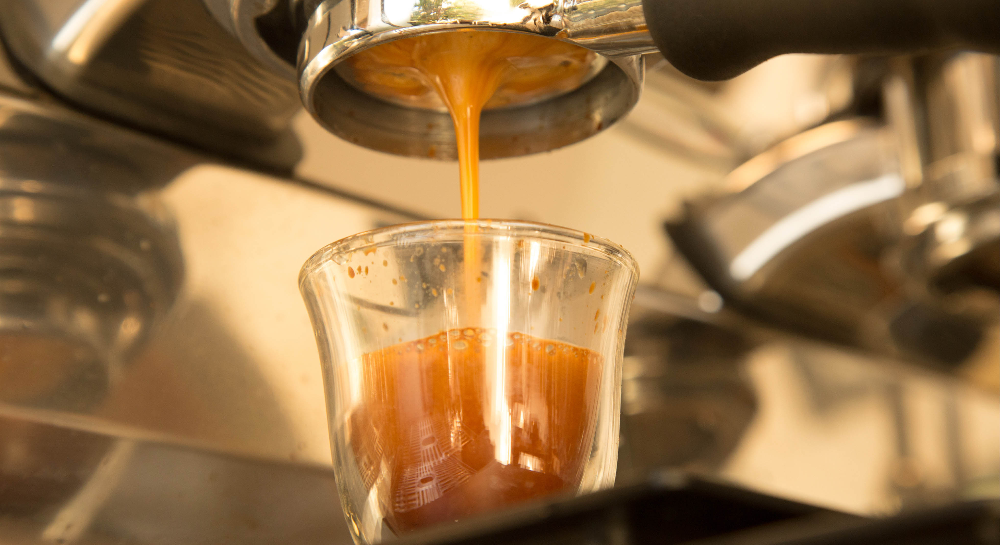

O Café
A xícara de café servida na Samba Cafe é a etapa final de um longo e cuidadoso processo, que tem início na colheita do grão e finalizamos com uma excelente extração até sua xícara.
O nosso trabalho começa com a prospecção de grãos na origem, seguida pela seleção e avaliação de qualidade. Feito isso, passamos para a etapa da torra e moagem, feita por perfil, com uma receita exclusiva desenvolvida para cada grão que comercializamos. O toque final fica por conta do talento dos nossos baristas, especialistas no serviço impecável do café e no excelente atendimento.
Tudo isso para oferecer a melhor experiência para você.
Nossos Grãos
Nossa abordagem requer, além da qualidade, outro nível de seleção. A fim de escolher apenas frutas amadurecidas corretamente, a maioria dos cafés utilizados para preparar nossos blends são colhidos à mão. Garantindo uma melhor qualidade na seleção.
Nem todos os grãos são cultivados da mesma maneira. Quanto mais rigorosa a classificação, mais consistente é o grão. Realizamos diversos controles físicos e sensoriais: antes do ensacamento do café no país de origem até ao Samba Cafe.
Torra e moagem
Na etapa de torra e moagem são onde revelamos o sabor e o potencial aromático do café. A torra perfeita depende do tempo, da temperatura e de outros parâmetros, adequados para cada tipo de blend, permitindo assim que as características de origem sejam perfeitamente desenvolvidas. Conhecemos as características dos nossos grãos e torramos cada um de uma maneira, com o objetivo de otimizar e maximizar o sabor.
Nós da Samba Cafe fazemos a moagem sob medida para a extração perfeita de cada café. Essa etapa é o que permite que as notas aromáticas do café sejam expressadas, tornando-se um uma etapa fundamental para oferecer a experiência máxima dos nossos Blends.
